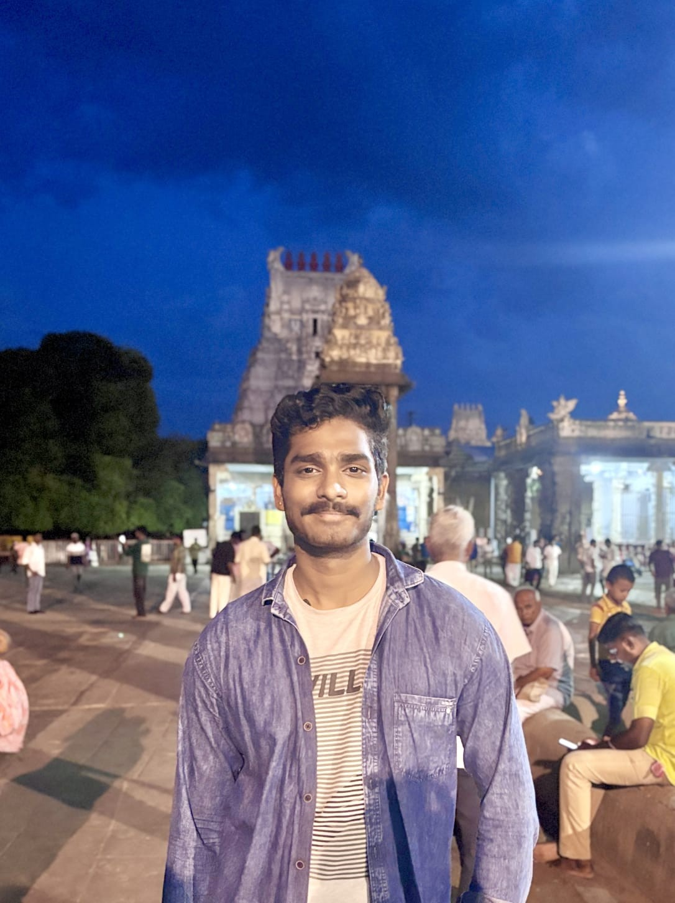

Embedded & IoT
ESP32, Arduino, sensor interfacing, motor control, basic telemetry
I’m Talari Durga Sashank, an Electrical and Electronics Engineering student building practical projects across embedded systems, IoT, power monitoring and machine learning.

Hi, I’m Talari Durga Sashank, an Electrical and Electronics Engineering (EEE) student at Saveetha University, Chennai, pursuing my B.E. from 2024 to 2028.
I’m originally from Visakhapatnam (Vizag), Andhra Pradesh, India, and currently based in Chennai for my studies.
I’m passionate about combining electrical engineering with modern technology—especially embedded systems, IoT, power systems, artificial intelligence and machine learning. I enjoy building practical hardware-and-software projects that explore real-world engineering problems.
My goal is to develop useful, testable engineering solutions, strengthen my technical skills, and grow in embedded systems, intelligent automation and AI-powered engineering.
A growing toolkit built around hardware, data and software.
ESP32, Arduino, sensor interfacing, motor control, basic telemetry
EEE fundamentals, electrical measurements, condition monitoring concepts
Python, pandas, scikit-learn, regression, NLP and model evaluation
HTML, CSS, JavaScript, Git, GitHub and dashboard prototyping
Skill bars are visual design elements, not formal proficiency ratings.
Engineering prototypes and machine-learning work. Open each card for more detail.
A mobile inspection prototype designed to monitor temperature and current, identify abnormal conditions and communicate system status through a monitoring dashboard.
Objective — explore a safer, remotely monitored approach to cable-route inspection and abnormal-condition awareness.
System elements — ESP32 controller, temperature and current sensing, motor driver, mobile robot platform and web-based monitoring/control interface.
Portfolio note — add your actual build photos, tested operating range and exact dashboard functions before publishing technical performance claims.
An Arduino-based mobile robot using sensor inputs and decision logic to respond to its surroundings, bringing together sensing, motor control and embedded programming.
Focus — sensor-based decisions, movement control and integration of multiple hardware modules.
What it demonstrates — practical embedded-system assembly, component interfacing and iterative hardware testing.
A regression-based project that learns from energy-related data to estimate future values and evaluates predictions against observed values.
Workflow — prepare a dataset, train a Linear Regression model, generate predictions and assess performance with error metrics.
Evaluation — your earlier project notes recorded MAE 2.218 and R² 0.9465 on a small 20-row dataset. Treat these as results from that dataset, not a guarantee of real-world forecasting accuracy.
A computer-vision project focused on identifying signs of driver drowsiness and supporting timely warnings to improve driver awareness.
Goal — detect visual cues associated with drowsiness from camera input.
Before publishing — confirm the actual libraries, alert mechanism and tested conditions from your repository so the description accurately reflects your implementation.
An NLP workflow that processes support-ticket text and categorizes requests to help organize incoming customer-support tasks.
Workflow — clean and transform text, extract useful features, train a classifier and review model predictions.
Use case — a prototype for prioritizing or routing support requests. Final claims should match the model and evaluation in your code.
A planned system to analyze current and temperature patterns, flag potentially abnormal operating conditions and visualize trends on a dashboard.
Start with simulated readings and a simple baseline model, then validate with real sensor data. This is a planned project and is not represented as completed.
Explore the GitHub profile for available source code and project updates. Individual repository links can be added as each project repository is confirmed.
Open to learning opportunities, engineering collaborations and suitable freelance projects.